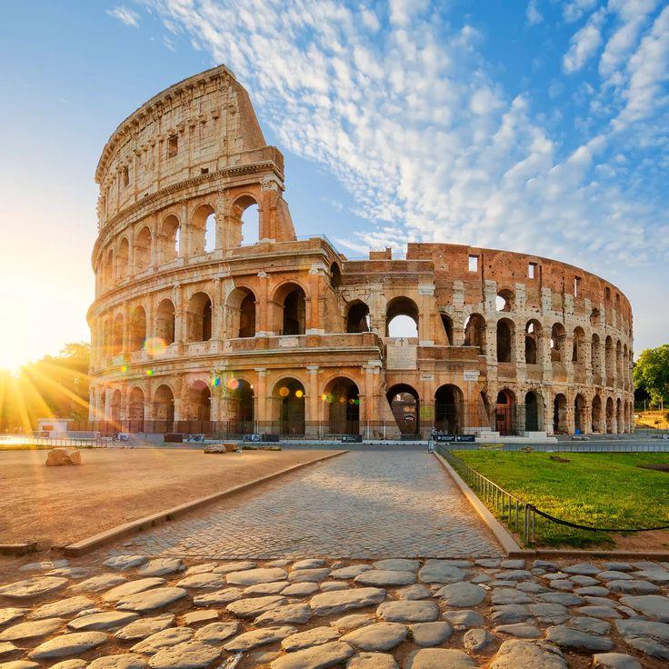
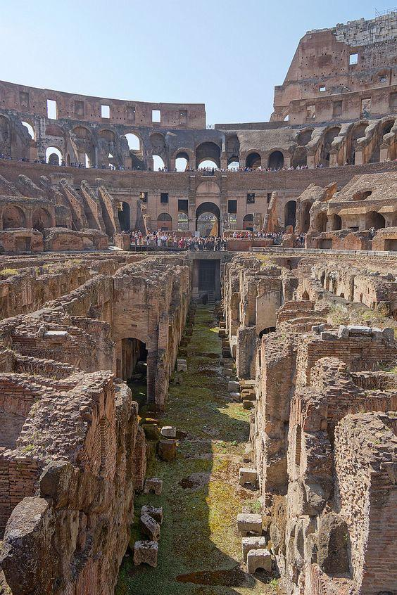
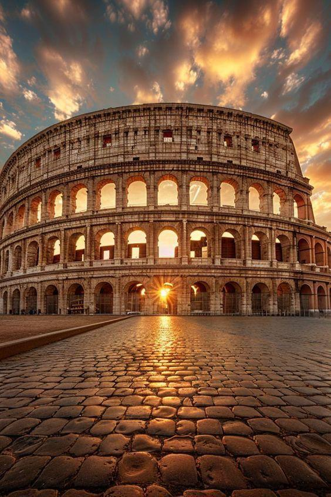
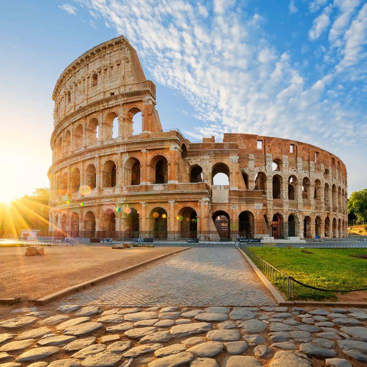
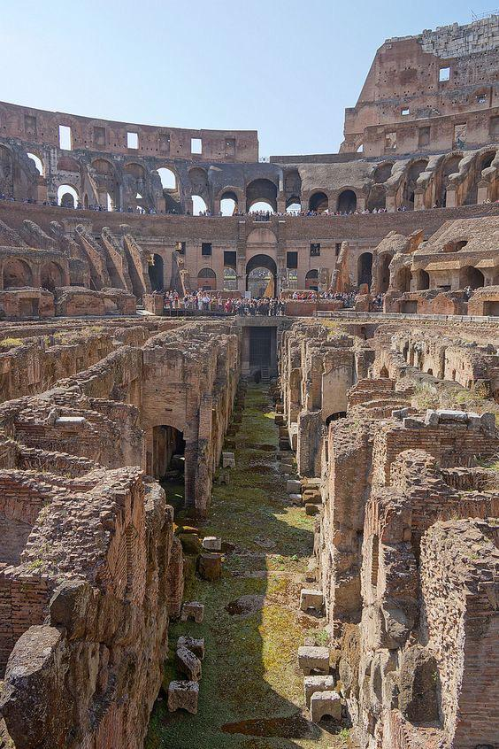
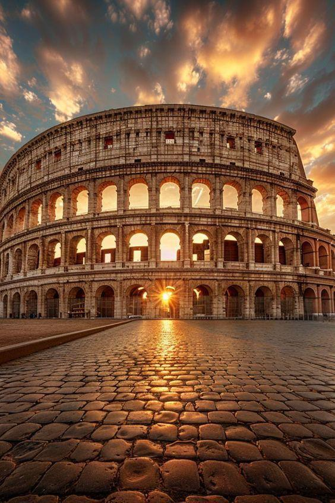

INTRODUCTION
Le Colisée (Colosseo en italien), à l'origine amphithéâtre Flavien (amphitheatrum Flavium en latin), est un immense amphithéâtre ovoïde situé dans le centre de la ville de Rome, entre l'Esquilin et le Cælius, le plus grand jamais construit dans l'Empire romain. Il est l'une des plus grandes œuvres de l'architecture et de l'ingénierie (en) romaines. Témoignage monumental de la propagande flavienne, sa construction, juste à l'est du Forum Romain, a commencé entre 70 et 72 apr. J.-C., sous l'empereur Vespasien, et s'est achevée en 80 sous Titus. D'autres modifications ont ensuite été apportées au cours du règne de Domitien (81-96)2. Le nom d'amphithéâtre Flavien dérive du nom de famille (gens Flavii) de l'empereur Vespasien et ses fils Titus et Domitien. Pouvant accueillir probablement 50 000 spectateurs (les estimations plus anciennes de 80 000 spectateurs, soit un douzième de la population romaine, étant exagérées)3, le Colisée, témoin de l'évergétisme impérial, a été utilisé pour les venationes (combats d'animaux sauvages), les munera (combats de gladiateurs) et autres spectacles publics, tels que des exécutions de condamnés à mort, des reconstitutions de batailles célèbres et des drames basés sur la mythologie romaine. Il est resté en service pendant près de 500 ans, les derniers jeux se prolongeant jusqu'au VIe siècle. Pour l'inauguration du Colisée, en 80 apr. J.-C., Titus donne une naumachie dans le Colisée transformé en bassin reconstituant la bataille navale de Corinthe contre Corcyre. Le bâtiment a finalement cessé d'être utilisé au cours du haut Moyen Âge. Il a plus tard été réutilisé pour des usages variés tels que des habitations, des ateliers d'artisans, le siège d'un ordre religieux, une forteresse, une carrière et un sanctuaire catholique chrétien.
Histoire et Architecture
Construit principalement en béton et travertin, le Colisée a accueilli des spectacles comme les combats de gladiateurs, des chasses d'animaux sauvages et même des reconstitutions navales. Avec ses 50 mètres de hauteur et ses 80 entrées, il reste un chef-d'œuvre d'architecture antique.e Colisée de Rome, monument emblématique de la puissance de l’Empire romain, est bien plus qu’un vestige de l’Antiquité : c’est une immersion dans une époque où grandeur et ingénierie se mêlaient pour créer des spectacles à couper le souffle. Construit sous les ordres de l’empereur Vespasien et achevé par son fils Titus en 80 après J.-C., cet amphithéâtre monumental pouvait accueillir jusqu’à 50 000 spectateurs. Chaque pierre raconte une histoire : des combats de gladiateurs palpitants aux grandes chasses mettant en scène des animaux exotiques venus des quatre coins de l’Empire. Sa conception ingénieuse, avec des systèmes de circulation fluides et des infrastructures avancées comme les souterrains du « hypogée », révèle un savoir-faire architectural hors du commun. Mais au-delà de son histoire impressionnante, le Colisée est un lieu où passé et présent se rencontrent. Les visiteurs d’aujourd’hui peuvent explorer ses arches majestueuses, ses gradins encore debout, et ses galeries, où l’on peut presque entendre les clameurs du public de l’époque. Ce monument, inscrit au patrimoine mondial de l’UNESCO, n’est pas seulement un site à voir, c’est une expérience à vivre. Venir au Colisée, c’est ressentir la force intemporelle d’une civilisation qui a marqué l’histoire du monde. Que vous soyez passionné d’histoire, d’architecture ou simplement curieux de découvrir l’un des lieux les plus fascinants de la planète, le Colisée offre un voyage unique dans le temps, où l’héritage romain se révèle dans toute sa splendeur.
Visiter le Colisée à Rome est une expérience incontournable pour plusieurs raisons :
1. Un témoignage unique de l’histoire romaine :
• Icône de l’Empire romain : Construit en 80 après J.-C., le Colisée est un symbole de la grandeur et de la puissance de Rome antique. • Lieu des jeux et spectacles : Ce gigantesque amphithéâtre accueillait des combats de gladiateurs, des chasses d’animaux sauvages et des spectacles publics, rassemblant jusqu’à 50 000 spectateurs.2. Chef-d’œuvre architectural :
• Une prouesse technique : Le Colisée témoigne de l’ingéniosité romaine avec ses systèmes avancés d’arènes, de gradins et de souterrains complexes. • Matériaux et techniques : Sa construction en travertin, en béton et en briques montre le savoir-faire des ingénieurs romains.3. Symbole de la culture et du patrimoine :
• Classé au patrimoine mondial de l’UNESCO, il est l’un des monuments les plus célèbres et visités au monde. • Il incarne l’influence durable de la civilisation romaine sur l’architecture et la culture occidentale.4. Une immersion historique captivante :
• Explorer les souterrains : Vous pouvez visiter les coulisses où les gladiateurs se préparaient et où les animaux étaient enfermés avant les combats. • Un lieu chargé d’émotions : Être sur place permet de ressentir l’atmosphère des spectacles d’autrefois et de mieux comprendre la vie à l’époque romaine.5. Une vue panoramique sur Rome :
• Depuis les niveaux supérieurs du Colisée, vous pouvez profiter d’une vue imprenable sur le Forum romain et les environs historiques. Visiter le Colisée, c’est plonger dans l’histoire fascinante de l’une des plus grandes civilisations de l’humanité tout en admirant un monument emblématique d’une beauté intemporelle.Galerie et Vidéo

 




